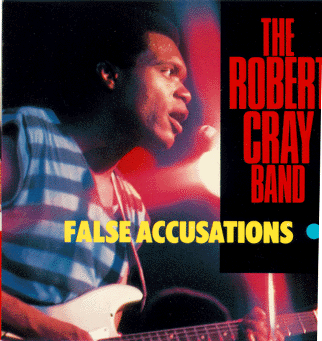

False Accusations - The Robert Cray Band

 Songs on the CD
Songs on the CD
-
Porch Light (D. Walker)
-
Change of Heart, Change of Mind (S.O.F.T.) (R. Cray - D. Cousins)
-
She's Gone (D. Amy - R. Cray - O. Washington - P. Boe)
-
Playin' in the Dirt (D. Amy - R. Cray)
-
I've Slipped Her Mind (D. Walker)
-
False Accusations (D. Walker - R. Cray - R. Cousins)
-
The Last Time (I Get Burned Like This) (R. Cray)
-
Payin' For It Now (D. Amy - R. Cray)
-
Sonny (D. Amy D. Walker)
The Robert Cray Band
Robert Cray - Guitar and Vocal
Richard Cousins - Bass
Peter Boe - Keyboards
David Olson - Drums
Horns By David Li
David Li - Tenor Sax
Nolan Smith - Trumpet
On "Sonny:"
Dale Wilson - 2nd Guitar
Dennis Walker - 2nd Bass
Some credits:
© Hightone Records
P.O. Box 8064
Emeryville, CA 94662
Producers - Bruce Bromberg and Dennis Walker
Direction - Mike Kappus - The Rosebud Agency
Design - Scott Billington
Photographs - Carl Keyes
Back to my
Cray page
Created: 12/4/95
By: rwhiffen
Mod: 11/22/97